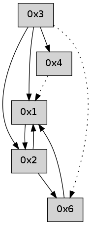

>> << IDX [start] -100 -25 -5 +0 +5 +25 +100 [405.154649019]
 Previous packets
----------------------------------------------------------------------
400.233567 beacon01(adaf) #0 coord=01,02,05,03,04,06 cycle=432.0ms assoc
-- color-indic=0 64 1f 19
400.243527 beacon02(adaf) #0 coord=01,02,05,03,04,06 cycle=432.0ms assoc 64 4e e6
400.253528 beacon05(adaf) #0 coord=01,02,05,03,04,06 cycle=432.0ms assoc 64 e8 cc
400.263529 beacon03(adaf) #0 coord=01,02,05,03,04,06 cycle=432.0ms assoc 64 74 e8
400.273528 beacon04(adaf) #0 coord=01,02,05,03,04,06 cycle=432.0ms assoc 64 d2 c2
400.283530 beacon06(adaf) #0 coord=01,02,05,03,04,06 cycle=432.0ms assoc 64 a6 de
----------------------------------------------------------------------
400.725675 beacon01(adaf) #0 coord=01,02,05,03,04,06 cycle=432.0ms assoc
-- color-indic=0 64 53 a9
400.735637 beacon02(adaf) #0 coord=01,02,05,03,04,06 cycle=432.0ms assoc 64 02 56
400.745636 beacon05(adaf) #0 coord=01,02,05,03,04,06 cycle=432.0ms assoc 64 a4 7c
400.755637 beacon03(adaf) #0 coord=01,02,05,03,04,06 cycle=432.0ms assoc 64 38 58
400.765636 beacon04(adaf) #0 coord=01,02,05,03,04,06 cycle=432.0ms assoc 64 9e 72
400.775636 beacon06(adaf) #0 coord=01,02,05,03,04,06 cycle=432.0ms assoc 64 ea 6e
400.787275 [Hello(4): seq=198 asym=1 sysInfo= stat=1:10,0,0,0]
400.792286 [Hello(1): seq=97 sym=2 sysInfo= stat=2:0,0,0,0]
----------------------------------------------------------------------
401.217782 beacon01(adaf) #0 coord=01,02,05,03,04,06 cycle=432.0ms assoc
-- color-indic=0 64 97 c6
401.227743 beacon02(adaf) #0 coord=01,02,05,03,04,06 cycle=432.0ms assoc 64 c6 39
401.237743 beacon05(adaf) #0 coord=01,02,05,03,04,06 cycle=432.0ms assoc 64 60 13
401.247744 beacon03(adaf) #0 coord=01,02,05,03,04,06 cycle=432.0ms assoc 64 fc 37
401.257745 beacon04(adaf) #0 coord=01,02,05,03,04,06 cycle=432.0ms assoc 64 5a 1d
401.267745 beacon06(adaf) #0 coord=01,02,05,03,04,06 cycle=432.0ms assoc 64 2e 01
----------------------------------------------------------------------
401.709891 beacon01(adaf) #0 coord=01,02,05,03,04,06 cycle=432.0ms assoc
-- color-indic=0 64 da c1
401.719853 beacon02(adaf) #0 coord=01,02,05,03,04,06 cycle=432.0ms assoc 64 8b 3e
401.729852 beacon05(adaf) #0 coord=01,02,05,03,04,06 cycle=432.0ms assoc 64 2d 14
401.739853 beacon03(adaf) #0 coord=01,02,05,03,04,06 cycle=432.0ms assoc 64 b1 30
401.749853 beacon04(adaf) #0 coord=01,02,05,03,04,06 cycle=432.0ms assoc 64 17 1a
401.759852 beacon06(adaf) #0 coord=01,02,05,03,04,06 cycle=432.0ms assoc 64 63 06
401.770915 [Hello(1): seq=98 sym=2 sysInfo= stat=2:0,0,0,0]
401.775157 [Hello(4): seq=199 asym=1 sysInfo= stat=1:11,0,0,0]
----------------------------------------------------------------------
402.201998 beacon01(adaf) #0 coord=01,02,05,03,04,06 cycle=432.0ms assoc
-- color-indic=0 64 1e ae
402.211958 beacon02(adaf) #0 coord=01,02,05,03,04,06 cycle=432.0ms assoc 64 4f 51
402.221959 beacon05(adaf) #0 coord=01,02,05,03,04,06 cycle=432.0ms assoc 64 e9 7b
402.231961 beacon03(adaf) #0 coord=01,02,05,03,04,06 cycle=432.0ms assoc 64 75 5f
402.241960 beacon04(adaf) #0 coord=01,02,05,03,04,06 cycle=432.0ms assoc 64 d3 75
402.251960 beacon06(adaf) #0 coord=01,02,05,03,04,06 cycle=432.0ms assoc 64 a7 69
----------------------------------------------------------------------
402.694106 beacon01(adaf) #0 coord=01,02,05,03,04,06 cycle=432.0ms assoc
-- color-indic=0 64 52 1e
402.704066 beacon02(adaf) #0 coord=01,02,05,03,04,06 cycle=432.0ms assoc 64 03 e1
402.714067 beacon05(adaf) #0 coord=01,02,05,03,04,06 cycle=432.0ms assoc 64 a5 cb
402.724067 beacon03(adaf) #0 coord=01,02,05,03,04,06 cycle=432.0ms assoc 64 39 ef
402.734067 beacon04(adaf) #0 coord=01,02,05,03,04,06 cycle=432.0ms assoc 64 9f c5
402.744069 beacon06(adaf) #0 coord=01,02,05,03,04,06 cycle=432.0ms assoc 64 eb d9
402.755146 [Hello(1): seq=99 sym=2 sysInfo= stat=2:1,0,0,0]
----------------------------------------------------------------------
403.186213 beacon01(adaf) #0 coord=01,02,05,03,04,06 cycle=432.0ms assoc
-- color-indic=0 64 96 71
403.196174 beacon02(adaf) #0 coord=01,02,05,03,04,06 cycle=432.0ms assoc 64 c7 8e
403.206173 beacon05(adaf) #0 coord=01,02,05,03,04,06 cycle=432.0ms assoc 64 61 a4
403.216175 beacon03(adaf) #0 coord=01,02,05,03,04,06 cycle=432.0ms assoc 64 fd 80
403.226176 beacon04(adaf) #0 coord=01,02,05,03,04,06 cycle=432.0ms assoc 64 5b aa
403.236177 beacon06(adaf) #0 coord=01,02,05,03,04,06 cycle=432.0ms assoc 64 2f b6
----------------------------------------------------------------------
403.678322 beacon01(adaf) #0 coord=01,02,05,03,04,06 cycle=432.0ms assoc
-- color-indic=0 64 ee dc
403.688283 beacon02(adaf) #0 coord=01,02,05,03,04,06 cycle=432.0ms assoc 64 bf 23
403.698284 beacon05(adaf) #0 coord=01,02,05,03,04,06 cycle=432.0ms assoc 64 19 09
403.708283 beacon03(adaf) #0 coord=01,02,05,03,04,06 cycle=432.0ms assoc 64 85 2d
403.718284 beacon04(adaf) #0 coord=01,02,05,03,04,06 cycle=432.0ms assoc 64 23 07
403.728283 beacon06(adaf) #0 coord=01,02,05,03,04,06 cycle=432.0ms assoc 64 57 1b
403.739669 [Hello(1): seq=100 sym=2 sysInfo= stat=2:1,0,0,0]
----------------------------------------------------------------------
404.170430 beacon01(adaf) #0 coord=01,02,05,03,04,06 cycle=432.0ms assoc
-- color-indic=0 64 2a b3
404.180391 beacon02(adaf) #0 coord=01,02,05,03,04,06 cycle=432.0ms assoc 64 7b 4c
404.190392 beacon05(adaf) #0 coord=01,02,05,03,04,06 cycle=432.0ms assoc 64 dd 66
404.200391 beacon03(adaf) #0 coord=01,02,05,03,04,06 cycle=432.0ms assoc 64 41 42
404.210391 beacon04(adaf) #0 coord=01,02,05,03,04,06 cycle=432.0ms assoc 64 e7 68
404.220392 beacon06(adaf) #0 coord=01,02,05,03,04,06 cycle=432.0ms assoc 64 93 74
----------------------------------------------------------------------
404.662539 beacon01(adaf) #0 coord=01,02,05,03,04,06 cycle=432.0ms assoc
-- color-indic=0 64 66 03
404.672502 beacon02(adaf) #0 coord=01,02,05,03,04,06 cycle=432.0ms assoc 64 37 fc
404.682499 beacon05(adaf) #0 coord=01,02,05,03,04,06 cycle=432.0ms assoc 64 91 d6
404.692500 beacon03(adaf) #0 coord=01,02,05,03,04,06 cycle=432.0ms assoc 64 0d f2
404.702500 beacon04(adaf) #0 coord=01,02,05,03,04,06 cycle=432.0ms assoc 64 ab d8
404.712501 beacon06(adaf) #0 coord=01,02,05,03,04,06 cycle=432.0ms assoc 64 df c4
404.724127 [Hello(4): seq=202 asym=1 sysInfo= stat=1:11,0,0,0]
404.729274 [Hello(1): seq=101 sym=2 sysInfo= stat=2:1,0,0,0]